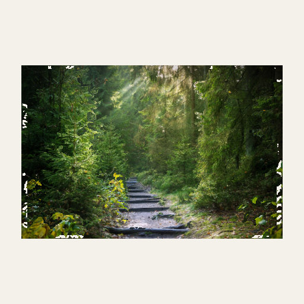
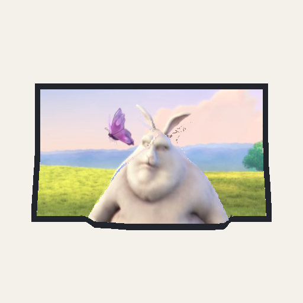
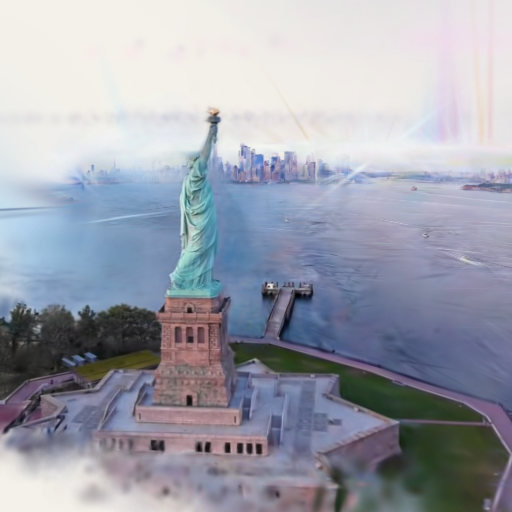
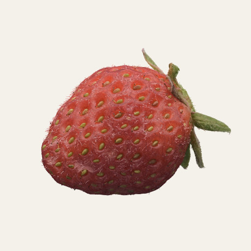
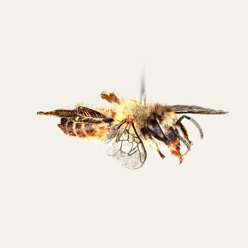

Chapter 8Photos and video into 3D
Chapters 6 and 7 start from things that are already numbers: a toy's recipe, a table, a catalog of stars. A photograph is not. It is a flat grid of colors with no depth, and a video is that grid thirty times a second. This chapter is about the ways Splashery gets 3D out of them, from the cheapest guess to a full reconstruction, and about what it can and cannot promise. The tools here are on the Studio shelf and behind the labs switch; the photoreal captures are on their own shelf, partly open.
Photo to 3D
What it is. Open a photo and get a toy you can turn: near things move across far things as you turn it. It is a depth effect, a guess, not a scan: from one picture there is no way to know what is behind a tree.
How Splashery does it. A depth model works out, for every part of the picture, how far away it is. The model is Depth Anything V2 Small [13] in its 8-bit quantized form, a file of 27 MB that runs in your browser through ONNX Runtime Web on one thread. (A page on GitHub Pages cannot share memory between threads, so the runtime has just one.) Both files are Splashery's own, served from the site; nothing is fetched from anywhere else and your photo is not uploaded. They load only when you open a photo of your own. The sample pictures on the toy come with their depth maps already worked out, so they need no model at all. Some samples are AI-made pictures, and each one says so beside it.
The picture goes to the model scaled so its long side is about 518 pixels, each side a multiple of 14 (the model reads the picture in 14-pixel tiles). The answer is a smooth map of relative depth: it says which parts are nearer than which, not how many meters. The photo is then rebuilt as splats. Each splat sits at its place in the picture and at its depth, colored from the photo, and sized to its neighbors on its own surface so the surface closes. A grid that adapts to the picture spends the splats where there is detail: a plain block of a wall is one big splat, and a block of letters splits into four, and again, down to single pixels, until the budget is spent. The budget is the tier's default count times 1.5, capped at the tier's maximum: 90,000 splats on a low device, 210,000 on a mid one, 300,000 on a high one, and 400,000 on the highest. Where the depth jumps between two neighbors by more than 0.015 of its range, the surface is cut, so a near object stands as its own layer and does not smear into the wall behind it. The picture is split into four depth layers, and a tap lifts them apart one at a time.
Why this way. The depth model needs only one photo and runs on the device, which fits a site with no server. The price is the model's guess. Splashery does not try to paint what the camera did not see, so a turn far enough shows the cuts.

The Sharp view (the default)
The splat view
The Sharp view
What it is. Splats are soft by nature, and a photo of a page of small print loses its letters when it is drawn as 200,000 soft blobs. The Sharp view is a second view of the same toy that keeps the photo at its full resolution.
How Splashery does it. The photo is laid as a texture on a relief: a surface lifted by the same depth the splats use. It is a textured surface, not splats. The depth slider, the tap, the layers, the sway, and, for a clip, play, pause, and scrubbing all move the relief as they would move the splats. A switch in the toy's panel chooses Sharp or Splats, and the choice is saved with the scene, so a shared link opens in the view it was saved in. A scene saved before the switch existed opens in Sharp. Where splats are needed, they show instead and the panel says so: while Poke, Paint, Magnet, or Clay is the active tool, in hands-on play, and while a Look effect is on. Saving the toy as a splat file is unaffected, since it reads the splats.
Why this way. Splashery is primarily splat-based but not only splat-based, and this is the clearest place it is not. The Sharp view is there because splats are the wrong tool for reading small text, and because the toy is still the same toy: the same depth, the same controls, the same saved link.
Moving photo to 3D
What it is. The same idea for a GIF or a short video: it plays back in 3D, each frame lifted by its own depth. The sample is six seconds of "Big Buck Bunny" (the bunny and the butterfly; © Blender Foundation, CC BY 3.0) with its depth worked out ahead of time, so it needs no model.
How Splashery does it. It takes the first 8 seconds of a video, or a GIF's frames, at up to 12, 15, or 24 frames a second depending on the device tier, each frame sized to 60,000, 140,000, or 200,000 pixels (or 640 by 360 on the highest tier). Running the depth model on every frame would take too long, so it works out the depth on at most 24, 32, or 48 frames spread evenly through the clip, at 196 or 294 pixels on the long side, and the frames between blend their neighbors' depths. The colors carry the motion. A video plays with its own sound and its frames follow that sound's clock. The depth is smooth, since the model guesses shapes and not edges, so it is sampled smoothly up to the frame's size and its edges are cut clean. It has the Sharp view too.
Video to 3D
What it is. Photo to 3D guesses depth from one picture. This toy does something different and harder: it takes many views of a still scene (the frames of a video that walks or flies around something), works out where the camera was for each, and trains a real 3D Gaussian splat scene that looks right from each of those places. It is the method of Chapter 1's first reference [1], running in your browser. A scene that stands still works. A moving car or person blurs or vanishes.
How Splashery does it. It uses Splat.js [21], an
MIT-licensed library vendored in vendor/splatjs/ and loaded only when you open
a video in this toy. The toy first picks the sharpest frame in each window of the stretch
you choose. Splat.js then works out the camera's path (it finds features, matches them
between frames, registers each camera, and adjusts them all together), seeds a splat cloud,
and trains it on the graphics chip through WebGPU: the splats' places, sizes, colors, and
opacities are nudged by gradient descent until the scene renders like each frame. The result
is shown as the toy's splats, and you can turn it, zoom, save it as a PLY, or tap
Replay flight to fly the video's own camera path with its sound.
How much it does depends on the device. A mid-tier device uses up to 32 frames at 640 pixels, trains 3,000 steps, and keeps up to 120,000 splats; a high-tier one uses 60 frames, 7,000 steps, and 250,000 splats; the lowest tier, a phone, uses 16 frames, 1,200 steps, and 30,000 splats, within 8 minutes. It needs WebGPU: a browser without it says so rather than starting. The samples (a statue flown around, a street walked) are results made the same way from two CC BY 3.0 videos; the videos themselves are not shipped, only the trained splats and the camera path.
Why this way. This is the one place Splashery trains a splat scene in your browser. It is honest about the cost: minutes of work on your graphics chip, a result only as good as the video, and no server.

A moving photo

A trained video: the statue sample
The photoreal captures
What it is. The Photoreal shelf holds real objects (a strawberry, a honeybee, a sunflower, a bonsai tree) that other people captured with many photographs and trained into 3D Gaussian splat files, which Splashery converts and shows. Of its 72 toys, 64 are captured scans and 8 are kit-built; 32 are open to everyone and 40 are behind the labs switch until they are ready.
How Splashery does it. Splashery does not train these. Each capture arrives as a file
under a license it can use, and a build tool converts it: it decimates the splats, centers
and scales the toy, and writes a .sog file (a compressed splat format), usually
as a pair, a full file and a lite one for weaker devices. The viewer opens
.ply, .sog, .splat, and .spz, so it can
also open your own captures. Files can carry spherical harmonics, the view-dependent color
the kit's own splats do not use, and some of the newer captures keep one band of them on the
full file. Big files warn and then thin: a low device warns at 60 MB or 400,000 splats and
thins to 300,000, and the highest tier warns at 200 MB or 2,000,000 splats and thins to
1,500,000.
Licenses. The 64 captured toys carry their credits beside them: 16 are CC0, 44 CC BY 4.0, one CC BY 2.0, and three are NonCommercial (CC BY-NC or CC BY-NC-SA), which are flagged in the asset list so they can be taken out if the site ever earns money. A capture under a NoDerivatives license, or with no license, is never used.

A strawberry

A honeybee
A demo goes here later
A photo with a slider that turns a flat picture into layers at their depths, side by side with the Sharp view, so the guess and the picture can be compared at once.
Where to try it
- Photo to 3D, Moving photo to 3D, and Video to 3D (all labs; the last needs WebGPU).
- Strawberry, Honeybee, and Grape (open to everyone). The grape has a peel that shows the pale flesh.